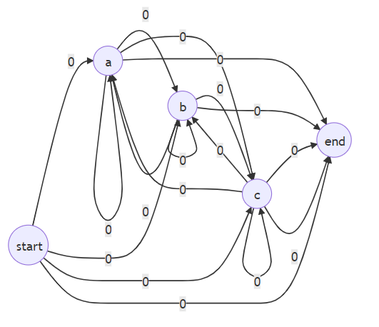
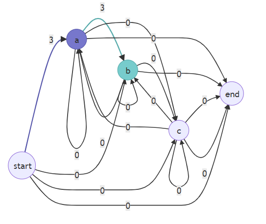
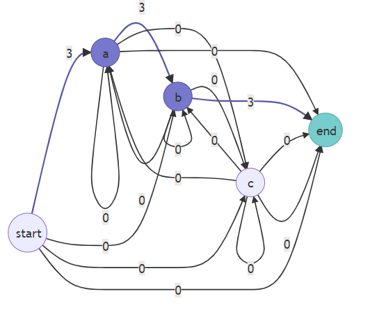
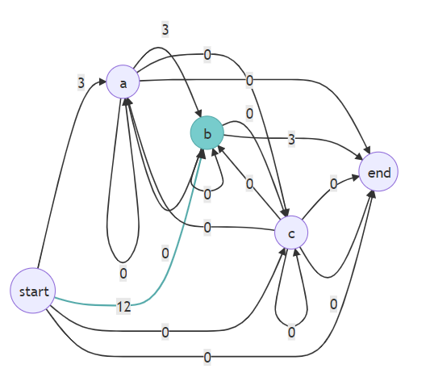
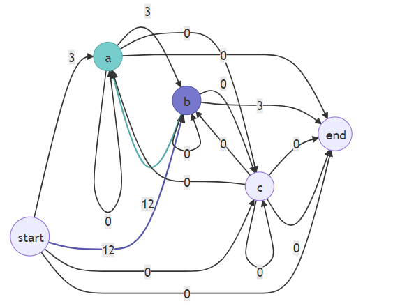
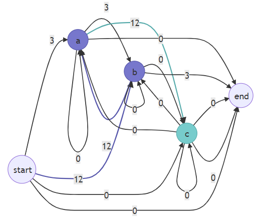
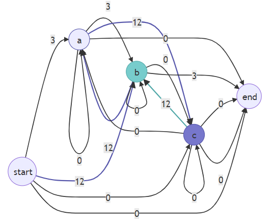
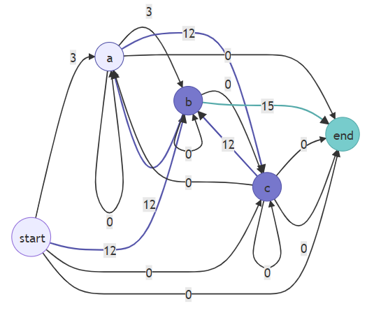
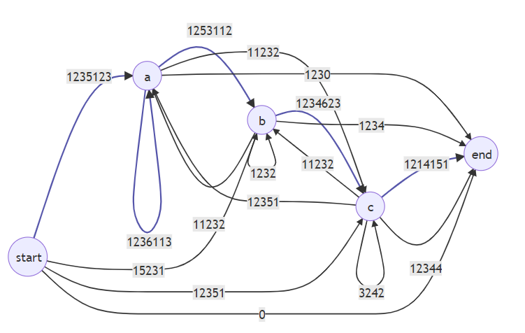
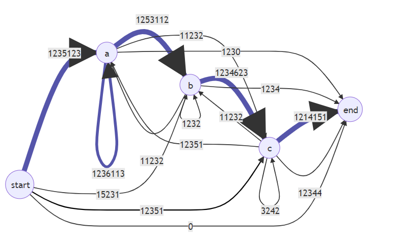

Markov Passwords
Projects
- Markov (MarkovModel)
- Compiled to a .lib and .dll file, and not an executable.
- Contains the Model, Node and Edge classes.
- Its the backbone of the project and will be the main dependency of MarkovPasswords to work.
- MarkovPasswords
- Includes MarkovModel.
- Will be used to specialize MarkovModel exclusively for password generation.
- Will have functions that help with file operations such as input and output, import export.
- As an example, this will read the dataset file, and pass each line to Markov::
Model:: adjust when training. - Basically command line interface for using MarkovModel.
- MarkovPasswordsGUI
- Has the user interface, will be used for performance analysis, debugging, and reporting.
What is a markov model
Below, is the example Markov Model which can generate strings with the alphabet "a,b,c"
Iteration 1
Below is a demonstration of how training will be done. For this example, we are going to adjust the model with string "ab", and our occurrence will be "3" From MarkovPasswords, inside the train function, Model::adjust is called with "ab" and "3" parameters.
Now, Model::adjust will iteratively adjust the edge weights accordingly. It starts by adjusting weight between start and "a" node. This is done by calling Edge::adjust of the edge between the nodes.

After adjustment, ajust function iterates to the next character, "b", and does the same thing.
As this string is finished, it will adjust the final weight, b->"end"
Iteration 2
This time, same procedure will be applied for "bacb" string, with occurrence value of 12.
Iteration 38271
As the model is trained, hidden linguistical patterns start to appear, and our model looks like this
With our dataset, without doing any kind of linugistic analysis ourselves, our Markov Model has highlighted that strings are more likely to start with a, b tends to follow a, and a is likely to be repeated in the string.
Import/Export
Import and export is done by storing/restoring list of all edges to/from a file. All the edges are traversed and written to the file in the format of "left,weight,right"
Training
MarkovPasswords should read input from our dataset file, parse it line by line, and feed it to Markov::
Once a training is complete, MarkovPasswords is supposed to export the model to a savefile so that model is not required to train for each run.
Generation
Generation is done by invoking Markov::
Testing/Cracking
Cracking is done EXTERNALLY. Our tool is not going to be responsible for cracking hashes. We are simply going to generate lists of strings, and are going to use 3rd party tools to crack them. Good examples for hash-cracking tools are Hashcat and John the ripper. They work with user supplied lists of strings.
Reporting & UI
We are also supposed to collect data from generation/training steps, and process them into useful graphs/charts/tables to help us determine how to improve the program. Some of the useful data to collect are:
- Number of duplicates generated
- Time taken during training, respective to number of lines in dataset
- Time taken during generation, respective ot output size
- Comparison graphs of number of cracked passwords using traditional wordlists, our generated wordlist, and complete incremental approach (where each password is checked one by one like AAAA, AAAB, AAAC, AAAD...)